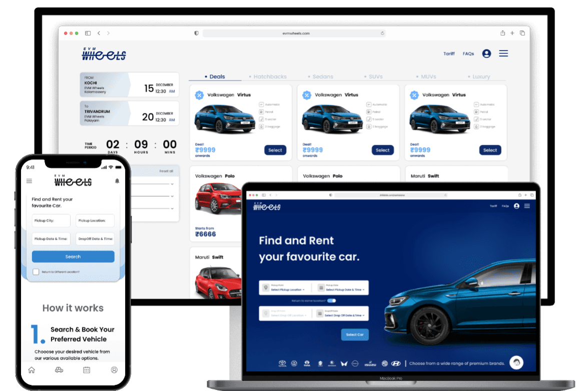
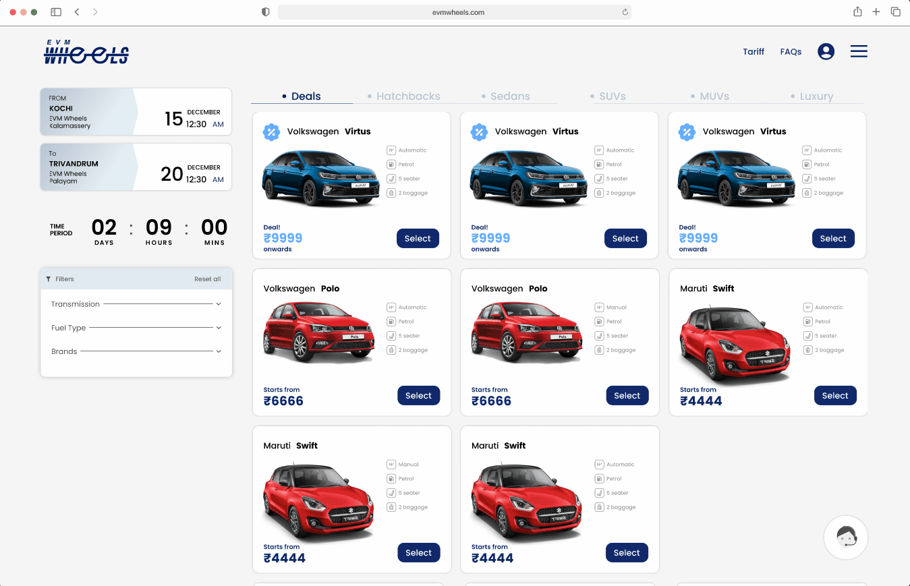
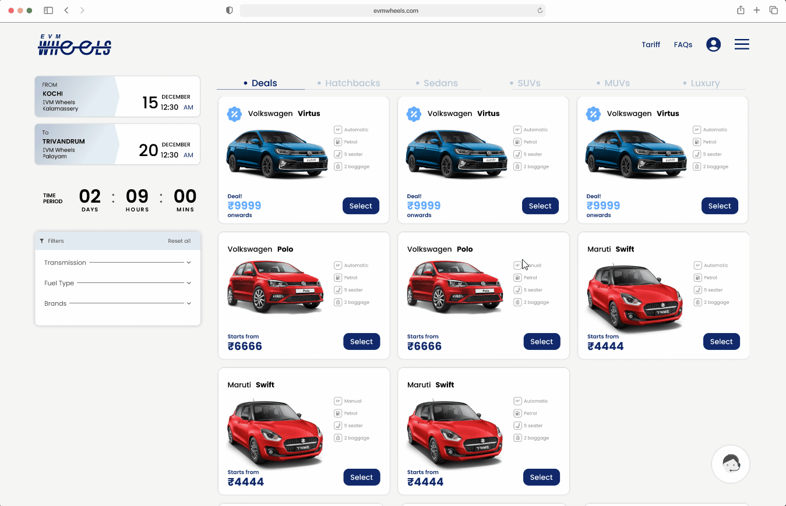

Confusing pricing
Deposits, taxes, extra charges, and optional fees were not clear enough before checkout.
Car and bike rental service / Kerala
A responsive self-drive rental platform redesigned to make search, pricing, checkout, documents, and support feel transparent for tourists, business travelers, and local riders.

Brief
EVM Wheels offers self-drive car and bike rentals across Kerala. The service had to work for visitors planning a trip, locals booking a short ride, and business travelers who needed a vehicle quickly with minimal ambiguity.
The core UX problem was not lack of demand. Users wanted the vehicles, but the booking experience created uncertainty around price, availability, documents, pickup terms, and support. Each moment of doubt added friction before payment.
The redesign focused on one promise: users should know what they are booking, what it costs, and what happens next.
Problem
Before the redesign, users struggled to compare vehicles and understand the total cost of a booking. Critical details like deposit, taxes, insurance, refund policies, pickup instructions, and support access were scattered across the journey instead of being available when decisions were being made.
Deposits, taxes, extra charges, and optional fees were not clear enough before checkout.
Users had trouble finding availability, insurance, refund policies, and pickup information.
Verification and document upload made the flow feel heavy, especially for repeat customers.
Users wanted faster help while booking, changing plans, picking up, and returning vehicles.
Personas
Marketing manager who travels frequently across Kerala and wants a quick, reliable rental for client meetings and city movement.
Software engineer who rents vehicles for spontaneous getaways and compares options carefully before committing.
Journey
Design strategy
Location, date, vehicle type, and pricing were placed upfront so users could start from their real trip context.
Budget, brand, vehicle type, fuel, transmission, ratings, and availability made the inventory easier to narrow.
Deposits, taxes, insurance, fees, and add-ons were separated so users could understand the total before checkout.
A persistent support entry point gave users reassurance during booking, pickup, return, and cancellation.
Audit to redesign
The older EVM Wheels website already contained the raw ingredients of a strong rental platform: vehicle cards, category tabs, filters, booking dates, countdowns, and support. But the yellow-theme experience treated those pieces as separate UI zones. Users had to connect price, availability, pickup, vehicle specs, documents, and support by themselves.
I used the audit to reorganize the product around the questions users actually asked: Is this available? What does it cost? Can I change pickup or drop-off? What documents are needed? Who helps me if something changes?


Yellow-theme screens are from the older website I redesigned; they are shown here as audit material and interaction evidence.
Final experience
The redesigned landing experience puts pickup, date, return-location behavior, and vehicle discovery into one clear booking start.

Screen system
The final direction kept the high-utility parts of the older website but rebuilt the hierarchy around a service lifecycle: search, compare, book, manage, and get help. That made the product feel less like a catalog of cars and more like a rental system that knew what could go wrong.
Usability study
I ran remote, unmoderated usability sessions with more than 20 participants aged 18-50. Each session focused on whether users could search, compare, understand total cost, complete checkout, and find help without explanation.
The search module was updated to make flexible drop-off behavior clearer instead of treating it like an edge case.
The cost breakdown was refined with clearer hierarchy, icons, and color-coded groups for deposits, taxes, and optional costs.
Allowing users to complete payment before uploading certain documents reduced interruption and made checkout feel lighter.
Support moved into a floating, always-available entry point across booking, pickup, and return contexts.
Refinement
Clear filters, upfront pricing, pickup instructions, cancellation details, and support reduced uncertainty before payment.
Saved preferences, quicker booking, optional later document upload, and dashboard access made repeat rentals more efficient.